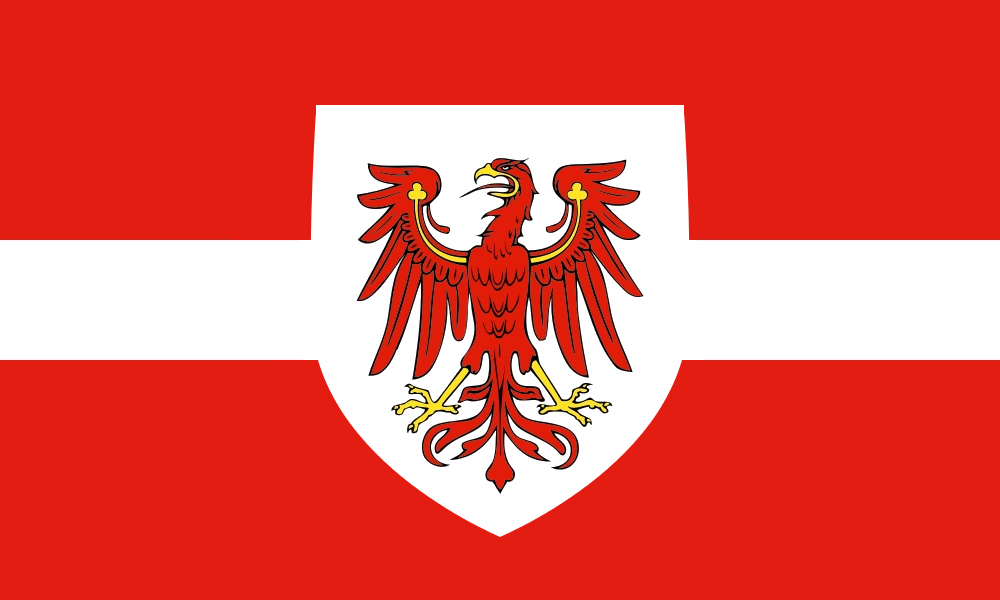

| Republic of Brandenburg | |||||
| |||||
|
 | |||||
| Capital | Berlin | ||||
| Government | Unitary parliamentary republic | ||||
| Legislature | Legislature | ||||
| - | Upper house | Bundesrat | |||
| - | Lower house | Bundestag | |||
| History | |||||
| - | Established | 2112 | |||
| - | Dissolution | September 16, 2139 | |||
| Today part of | European Association | ||||

Brandenburg, officially the Republic of Brandenburg, was a sovereign nation located in Central Europe that would end up participating in the Third Mexican-American War. Created after the dissolution of Germany and was seen as a the true successor to the former state, Brandenburg bordered Denmark to the north, Poland to the east, Saxony to the south, and Hanover to the west. The main ethnic group of Brandenburg were German's, with a small populative pocket of Polish. The main religion is Protestantism and Christianity, with a plurality of Islamic and generally non-religious citizens. The official language of Brandenburg is German.